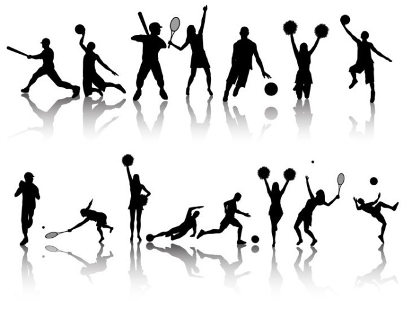

경쟁과 유희성을 가진 신체운동 경기의 총칭.
스포츠는 심한 육체활동이나 연습의 요소도 포함하는 말이다. 현대의 스포츠는 경기규칙에 따라 승패를 겨루는 신체적 활동이지만, 여기에 참가하는 사람의 입장에서 보면
활동의 강약도에 따라 레크리에이션 또는 유희로 부를 수도 있다. 대개 신체의 육성을 목적으로 하는 신체활동을 체육이라고 하는데, 체육과 스포츠를 명확히 구분해서 말하기는 어렵다.
스포츠 발생의 역사적인 뜻에서 본다면 낚시 ·장기 ·체스와 같은 것도 스포츠에 포함되는 경우가 있으나 현대 스포츠의 구성에는 들지 않는다.
그런가 하면 사격은 신체적 활동을 주로 하는 것이 아닌데도 20세기 초엽의 군국주의시대에 군인 경기로서 올림픽경기에 채택되었으며, 적중률을 겨룬다는 점에서 볼 때
경쟁이라는 스포츠 요소를 갖추었다 하여 그대로 존속한다.
스포츠는 형태상으로 보아 아마추어와 프로페셔널, 그리고 도박경기로 나눌 수 있다. 프로경기는 직업적이라 하여 아마추어만이 스포츠라고 주장하는 견해가 지배적인데,
그런 의미에서 경기종목상으로 보더라도 아마추어스포츠가 가장 많고, 프로스포츠나 도박경기는 흥행적인 성립 여부에 좌우되므로 종목수도 많지 않다.
도박경기는 근대 스포츠 조직화의 첫걸음이 된 것으로서 동시에 영국 아마추어스포츠의 시조이다. 아마추어라는 문자를 사용한
최초의 레이스인 헨리 레가타(1839)에까지 제1차 세계대전 전까지는 도박이 공인되었다. 축구에서는 영국의 풀(pool), 이탈리아의 토토(toto) 등 내기의 뜻이나,
오늘날에는 이와 같은 도박경기를 갬블(gamble)이라고 한다. 올림픽경기대회도 멕시코 올림픽 때는 갬블이라는 타이틀을 얻었다.